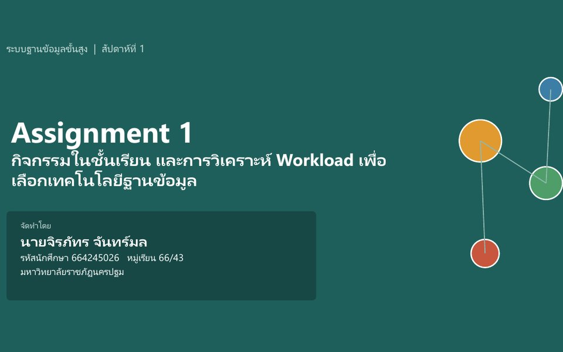

HW 01Data Modeling · Polyglot● ส่งแล้ว
Assignment 1 — วิเคราะห์ Workload เพื่อเลือกฐานข้อมูล
เลือกฐานข้อมูลให้เหมาะกับ workload 5 ระบบ เทียบ Table กับ Graph ออกแบบ Social Graph สำหรับ Mini Project และวิเคราะห์ 3 แอปพลิเคชันแบบ Polyglot Persistence
Relational / Document / GraphSQL JOIN vs Cypherออกแบบ Social GraphPolyglot Persistence